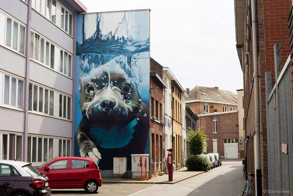

Vanessa Dutton on jul 01, 2016 CSS Keyframe Animation with Delay Between Iterations Say you want an animation to run for 1 second, but then delay for 4 seconds before running again. Seems like that would be easy. Turns out it's not-so-straightforward, but doable. You need to fake it. Read more
Brendan Martinez on jul 01, 2016 CSS Keyframe Animation with Delay Between Iterations Say you want an animation to run for 1 second, but then delay for 4 seconds before running again. Seems like that would be easy. Turns out it's not-so-straightforward, but doable. You need to fake it. Read more
Rosemary Dodson on jul 01, 2016 Considerations for Styling a Modal A modal. A small box that pops up to tell you something important. How hard can it be? Wellllll. Medium hard, I'd say. There's quite a few considerations and a few tricky things to get just right. Let us count the ways. Read more
Brian Fane on jul 01, 2016 Change Color of All Four Borders Even With “border-collapse: collapse;” The following is a guest post by Daniel Jauch. It's a quicky that covers something I bet many of us have run across at one time or another: border-collapse is great, until it impedes on your ability to change a border color you're trying to change because of the overlapping. Read more
Michael Calhoun on jul 03, 2016 The Moment CSS Started Making “Sense” It was way back in 2008 that Chris shared his "Ah-ha!" moment when working with CSS. You know, that metaphorical lightbulb that ignites when you go from not knowing what the heck CSS is to suddenly having a baseline for understanding how it works. Read more
 Daniel Da Silva on jul 04, 2016 How I Ended Up With Element Queries, And How You Can Use Them Today We often want a component to respond to the dimensions of its parent element rather than the dimensions of the browser window. Currently that’s not possible but ultimately that’s the idea behind Element Queries, and over on Smashing Magazine Tommy Hodgins has written about the development of EQCSS.js, a JavaScript library which allows developers to write element queries. Read more
Michael Calhoun on jul 10, 2016 Collaborative Engineering and Design Tools Working at any large company, the greatest hurdle is always the problem of scale. Be it engineering, design, or how they work together, communication is the key to a successful business. Here are some of the tools that I've seen help a great deal while collaborating on a large team. With a number of engineers and designers in the mix — not to mention hybrids like me — working together seamlessly and staying focused on a common goal for a long period of time can be challenging. Here are a number of tools I've seen firsthand to ensure tight and seamless collaboration and communication. Read more
Vanessa Frank on jul 15, 2016 Optimizing Critical-Path Performance With Express Server And Handlebars Recently, I’ve been working on an isomorphic React website. This website was developed using React, running on an Express server. Everything was going well, but I still wasn’t satisfied with a load-blocking CSS bundle. So, I started to think about options for how to implement the critical-path technique on an Express server. Read more
Daniel Da Silva on jul 15, 2016 Battling BEM (Extended Edition): 10 Common Problems And How To Avoid Them Whether you’ve just discovered BEM or are an old hand (in web terms anyway!), you probably appreciate what a useful methodology it is. If you don’t know what BEM is, I suggest you read about it on the BEM website before continuing with this post, because I’ll be using terms that assume a basic understanding of this CSS methodology. Read more